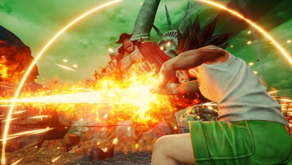

Jump Force fue sin duda una de las sorpresas más agradables del E3 2018. Presentado durante la conferencia de Microsoft, este juego de lucha enfrenta a personajes icónicos del manganime
que han aparecido en las páginas de la legendaria revista Shonen Jump (de ahí su nombre), como ya hicieron en el pasado juegos como Battle Stadium D.O.N. o J-Stars Victory VS+.
Si todavía no habéis visto el tráiler de presentación de Jump Force, podéis hacerlo a continuación.
En lo jugable, Jump Force se asemejará a la saga Ultimate Ninja Storm (los populares juegos de lucha de Naruto), es decir, combates en 3D -con la cámara tras la espalda del personaje
que tienen lugar en grandes arenas. Con la particularidad de que los combates de Jump Force son 3 contra 3, pudiendo alternar entre personajes en cualquier momento, y se desarrollan
en ubicaciones del mundo real.

Por ahora, las franquicias confirmadas son: Dragon Ball Z, Naruto, One Piece, Bleach, Hunter x Hunter y Death Note. Aunque, en el caso de este último, Light Yagami y Ryuk no será personajes jugables.
A los que si podremos controlar son:
- Son Goku (Dragon Ball Z)
- Naruto Uzumaki (Naruto)
- Monkey D. Luffy (One Piece)
- Frieza (Dragon Ball Z)
- Sasuke Uchiha (Naruto)
- Roronoa Zoro (One Piece)
- Ichigo Kurosaki (Bleach)
- Rukia Kikuchi (Bleach)
- Sosuke Aizen (Bleach)
- Vegeta (Dragon Ball Z)
- Gon Freecss (Hunter x Hunter)
- Hisoka Morroh (Hunter x Hunter)
- Marshall D. Teach aka Barbanegra (One Piece)
- Sanji (One Piece)
- Sabo (One Piece)
En cuanto a los escenarios, los confirmados hasta el momento son:
- Times Square (Nueva York)
- Matterhorn (los Alpes)
- Hong Kong (China)
- Planeta Namek
|